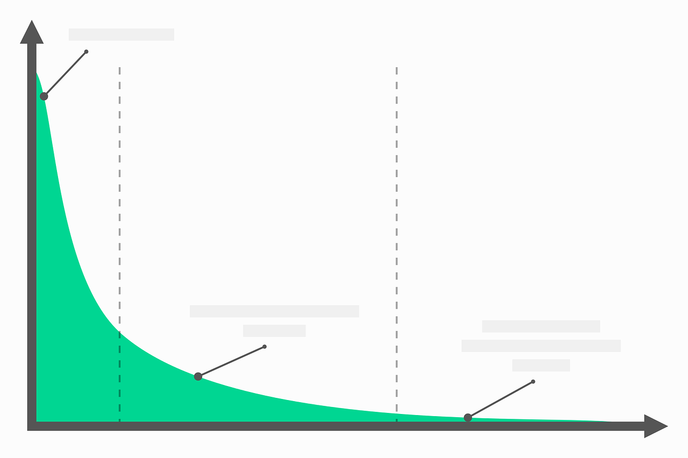
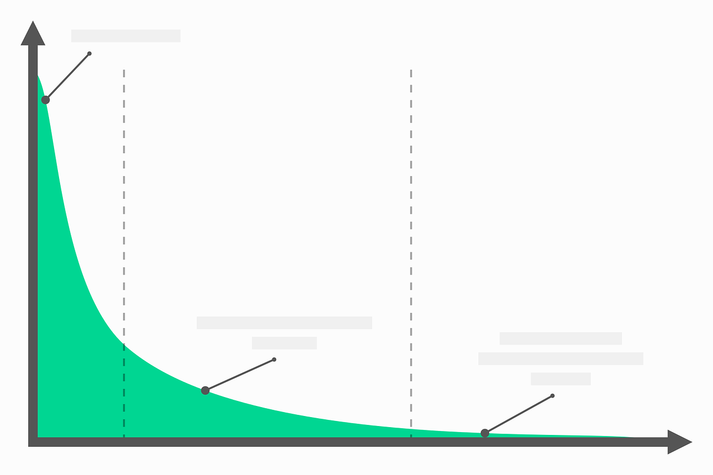

With over 20 years of business analytics experience,
I work with a wide variety of industry partners
to help them make better use of their data and,
in turn, better business decisions. From data literacy, visualisation, analytics,
interpretation and communication I am here to help
with all your business analytics needs.
Let's work together to make better data-driven decisions!
 DATA
DATA
Data type and quality is important. Decisions need to be based on sound data
otherwise it's a "garbage-in, garbage out" situation. Questions to consider:
What data are you collecting? What data should you be collecting?
What business problems are you looking to resolve?
 INSIGHT
INSIGHT
Discover the hidden patterns in your data. Make comparisons between groups.
Data visualisation is essential to translate data into information. Questions to consider:
What comparisons are useful to solve the business problem?
What are we expecting form the data?
What are the relationships in our data?
What does the broader evidence tell us in terms of benchmarking and research evidence?
 ACTION
ACTION
Don't let all that hard work in terms of data collection and
data visualisation go to waste. Make sure it is linked with business decisions and actions.
Questions to consider: How are insights linked with the business problem? What are the
blockers for change? What would the change look like? How can we measure/determine
whether the change is successful? More data...


 and turn it into this...
and turn it into this...

 and turn it into this...

and turn it into this...
  and turn it into this...
and turn it into this...